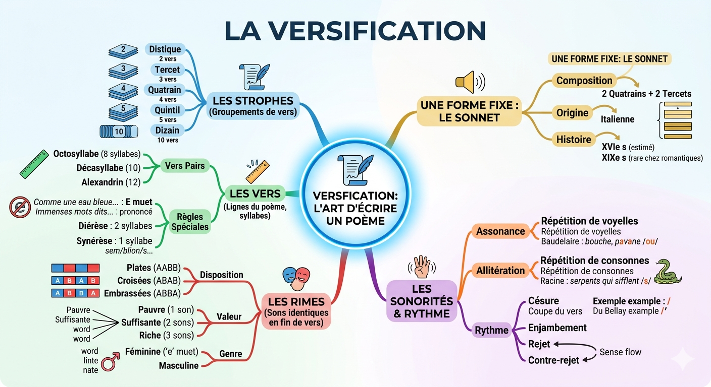
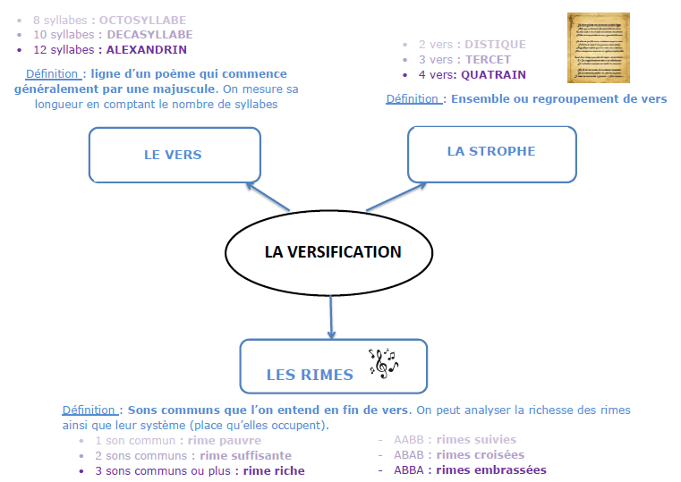

La versification
Définition
La versification est l'ensemble des techniques utilisées pour écrire un poème. La reconnaître, c'est se donner des outils pour interpréter un texte poétique. Elle repose sur trois piliers : les vers (lignes du poème), les strophes (groupes de vers) et les rimes (sons répétés en fin de vers).
Pièges à éviter
La méthode pour analyser un poème sans se tromper
Étape 1 — Les vers : combien de syllabes ? (octosyllabe, décasyllabe, alexandrin ?)
Étape 2 — Les strophes : combien de vers par groupe ? (distique, tercet, quatrain… ?)
Étape 3 — Les rimes : quel schéma ? (AABB, ABAB, ABBA ?) Quelle valeur ? (pauvre, suffisante, riche ?)
Étape 4 — Les sonorités et le rythme : assonances, allitérations, césure, enjambements ?
Oublier le « e » muet
C'est l'erreur la plus fréquente ! Le « e » muet se prononce entre deux consonnes dans un vers, même si on ne le dit pas dans la conversation.
❌ « vot(re) ami » → on ne compte que 3 syllabes à l'oral
✅ « vot / re / a / mi » → dans un vers, le « e » de « votre » devant une voyelle disparaît (élision), mais devant une consonne il compte.
Règle simple : e + consonne = prononcé / e + voyelle = muet / e en fin de vers = toujours muet.
Confondre rime féminine et rime riche
Ce sont deux critères indépendants !
- Genre = féminine (e muet final) ou masculine (autre terminaison)
- Valeur = pauvre (1 son), suffisante (2 sons), riche (3 sons +)
lumière / dernière = rime féminine (se termine par « e ») ET riche (3 sons : i-è-re)
mou / fou = rime masculine ET pauvre (1 son : ou)
Confondre assonance et allitération
Assonance = répétition d'une voyelle → sons ouverts, musicaux.
Allitération = répétition d'une consonne → effet plus dur, mimétique.
« Pour qui sont ces serpents qui sifflent… » → allitération en /s/ (consonne)
« l'amour se pavane » → assonance en /a/ (voyelle)
Confondre enjambement, rejet et contre-rejet
Ces trois notions concernent toutes le débordement du sens d'un vers sur un autre, mais la nuance porte sur où se situe le groupe de mots qui déborde.
- Enjambement : sens qui continue naturellement sur le vers suivant (sans coupe forte).
- Rejet : un petit groupe de mots est repoussé au début du vers suivant.
- Contre-rejet : un petit groupe de mots annonce la suite, placé à la fin du vers précédent.
Diérèse ≠ Synérèse
Diérèse : on sépare deux voyelles → le mot compte plus de syllabes que d'habitude. L'auteur le fait pour compléter le nombre de syllabes du vers.
Synérèse : on fusionne deux voyelles → le mot compte moins de syllabes. L'auteur le fait pour ne pas dépasser le nombre voulu.
« vi-o-lon » = 3 syllabes (diérèse) vs « vion » = 2 syllabes (synérèse)
Confondre strophe et paragraphe
Une strophe n'est pas un simple paragraphe ! Elle doit être composée de vers (lignes commençant par une majuscule), séparés des autres strophes par un espace blanc.
Dans un poème en prose, il n'y a pas de vers ni de strophes au sens strict : les lignes ne suivent pas un nombre fixe de syllabes.
Cartes mentales
Cliquez sur une carte pour l'agrandir. Vous pouvez la télécharger pour l'imprimer ou la réviser hors connexion.
La poésie régulière et non régulière

La versification — l'art d'écrire un poème

Vers, rimes et strophes

Fiche de révision
Choisis les éléments à inclure :
Les vers
Les strophes
Les rimes
Sonorités et rythme
Pièges
Aller plus loin
Vidéos
Analyser une poésie : avec le bon vocabulaire ! La versification — résumé complet ANALYSEZ UN POÈME — quiz vocabulaire poétiqueExercices en ligne
EspaceFrancais — La versification française Babelio — Quiz la versification Lumni — Notions de versification (collège)Document de cours
Séance 4 — La versification d'un poème (PDF)Cours complet avec exercices sur À une passante de Victor Hugo.